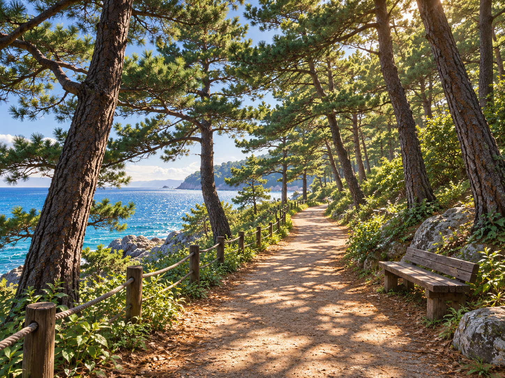
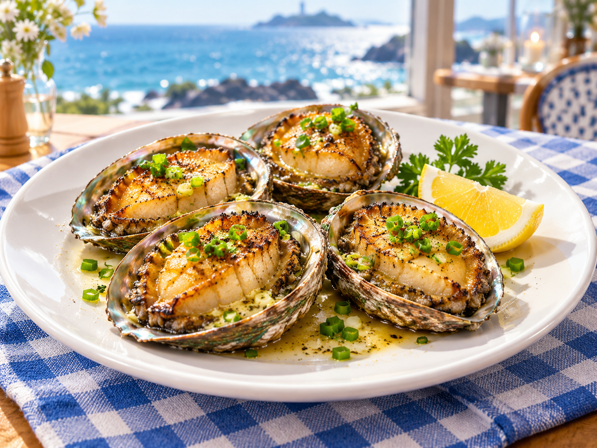
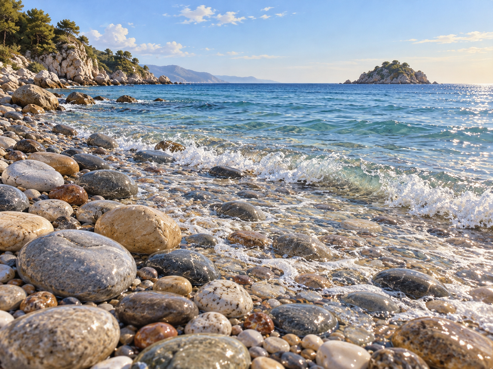
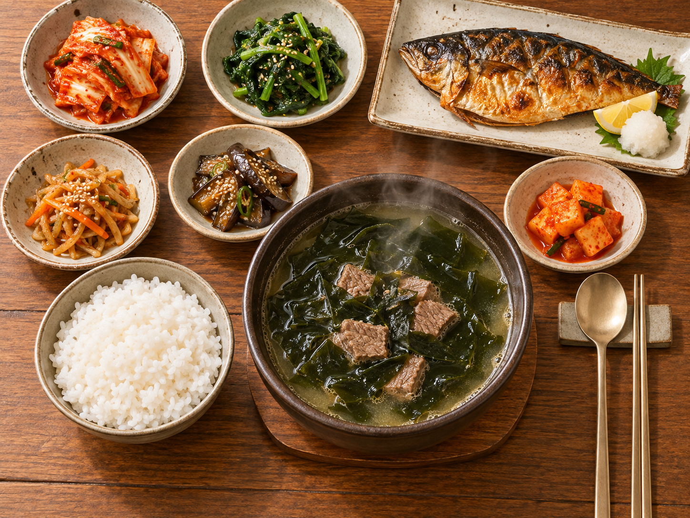
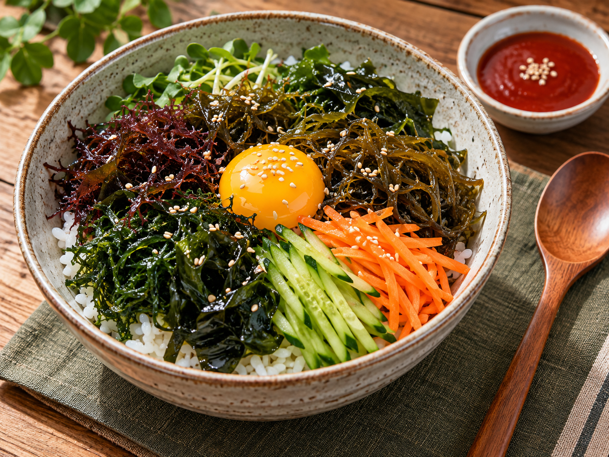

🗺️ 추천 코스
뭘 할지 고민된다면, 이대로만 따라와 보세요!
☀️ 당일치기 코스
하루면 충분해요. 천천히 걸으며 해솔마을 한 바퀴 🚶
-
 🕤 09:30
🕤 09:30하얀 등대에서 시작해요
맑은 아침 공기를 마시며 나무다리를 건너 보세요. 사진 찍기에 제일 좋은 시간이에요.
📍 전라남도 해솔군 바닷길 1 (가상)
-

🕚 11:00솔숲 바닷길 산책
소나무 그늘 아래를 걸으며 바다를 구경해요. 벤치에서 잠깐 쉬어 가도 좋아요.
📍 전라남도 해솔군 솔숲길 28 (가상)
-

🕧 12:30점심은 전복 버터구이
바다가 보이는 식당에서 통통한 전복구이를 맛보세요. 오늘의 하이라이트 식사예요!
🍽️ 등대 앞 바다식당 · 바닷길 3 (가상)
-

🕝 14:30몽돌 해변에서 쉬어 가요
파도 소리를 들으며 몽돌 위를 천천히 걸어 보세요. 맨발도 좋아요!
📍 전라남도 해솔군 몽돌길 7 (가상)
-
🕠 17:30
노을 전망대에서 해넘이
하늘과 바다가 주황빛으로 물드는 시간이에요. 오늘 하루의 하이라이트!
📍 전라남도 해솔군 노을길 45 (가상)
-

🕖 19:00저녁은 미역국 정식
뜨끈한 미역국과 집밥 같은 반찬으로 하루를 따뜻하게 마무리해요.
🍽️ 솔숲 밥상 · 솔숲길 30 (가상)
🌙 1박 2일 코스
밤바다까지 느긋하게 즐기고 싶다면 이 코스예요 🌌
📅 첫째 날
-

🕐 13:00도착하자마자 해초 비빔밥
마을에 도착하면 점심부터 먹어요. 톳, 파래, 미역을 듬뿍 올린 건강한 한 그릇!
🍽️ 갯내음 식당 · 몽돌길 9 (가상)
-
🕒 15:00
몽돌 해변 산책
식사 후에는 바로 옆 몽돌 해변에서 소화도 시킬 겸 천천히 걸어요.
📍 전라남도 해솔군 몽돌길 7 (가상)
-
🕠 17:30
노을 전망대에서 해넘이
첫날의 하이라이트예요. 해가 지는 모습을 놓치지 마세요!
📍 전라남도 해솔군 노을길 45 (가상)
-
🕖 19:00
저녁은 전복 버터구이
여행의 첫날 밤을 근사한 전복 요리로 채워요.
🍽️ 등대 앞 바다식당 · 바닷길 3 (가상)
-
 🕗 20:30
🕗 20:30밤바다 산책 후 숙소로
은은한 불빛이 켜진 바닷길을 걷다가 숙소에서 푹 쉬어요. 8월이면 등불축제도 열려요 🏮
🛏️ 숙소는 '숙소' 페이지에서 골라 보세요
📅 둘째 날
-
 🕗 08:30
🕗 08:30아침은 전복미역죽
속이 편안해지는 따뜻한 죽으로 하루를 시작해요.
🍽️ 해솔 아침죽집 · 바닷길 14 (가상)
-
🕙 10:00
솔숲 바닷길 산책
아침 햇살이 소나무 사이로 쏟아지는 시간이에요. 산책하기 딱 좋아요.
📍 전라남도 해솔군 솔숲길 28 (가상)
-
🕦 11:30
하얀 등대에서 마지막 인사
어젯밤 멀리서 반짝이던 등대를 낮에 가까이서 만나요. 기념사진도 꼭 남기세요!
📍 전라남도 해솔군 바닷길 1 (가상)
-
🕐 13:00
점심은 미역국 정식, 그리고 안녕!
든든한 집밥으로 여행을 마무리하고 집으로 출발해요. 또 놀러 오세요 👋
🍽️ 솔숲 밥상 · 솔숲길 30 (가상)